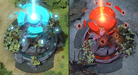
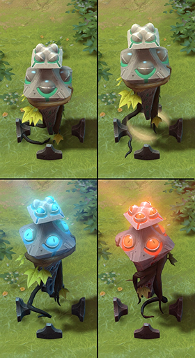
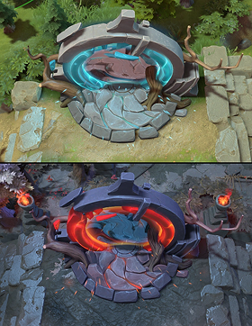
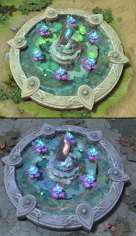
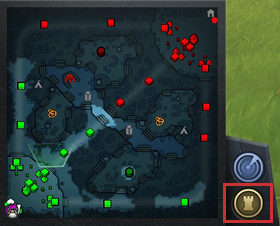
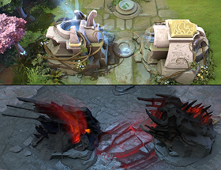
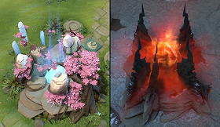
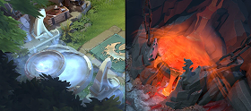
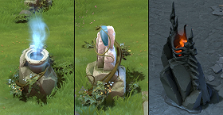

В начале каждого матча команды получают в распоряжение набор построек, появляющихся в заданных позициях. Обе фракции имеют одинаковый набор, отличающийся лишь визуально.
Помимо командных, существует несколько нейтральных построек, разбросанных по карте, которые могут быть завоёваны или использованы обеими командами.
Нейтральные постройки
постройки, не принадлежащие напрямую ни одной из сторон, но могут быть захвачены или использованы обеими. Они постоянно неуязвимы и невосприимчивы к способностям.
Аванпосты
— постройки, расположенные в лесах каждой команды возле потайной лавки (нижняя линия)

Нажав на аванпост правой кнопкой мыши, вы начнете прерываемый шестисекундный захват. Чем больше союзников захватывают аванпост, тем быстрее это происходит.
За захват аванпоста дается опыт (25). Также опыт дается за каждый пятиминутный интервал (15:00, 20:00 и тд.), если в это время вы контролируете аванпост. Если захвачены оба аванпоста, опыт дается только за один из них.
Вокруг аванпоста дается неограниченный обзор в радиусе 500, и на него можно телепортироваться.
Не действуют в первые 10 минут игры. В это время их захватить нельзя.
Смотрители
— маленькие постройки (10 шт), дающие обзор, расположенные в нескольких точках карты. Начинают игру нейтральными и в готовом состоянии.

Время захвата фиксировано (1,5 сек) и не меняется от количества одновременно захватывающих игроков.
Если смотритель был нейтрален, по окончании захвата он включается на 7 минут. Дает обзор радиусом 800, не раскрывает невидимость. По истечении этого времени, переходит в готовое состояние, становится нейтральным и может быть захвачен снова.
Если смотритель уже захвачен, по окончании произнесения он отключается на 2 минуты, становится нейтральным, невыбираемым, потому не может быть захвачен. По истечении этого времени, переходит в готовое состояние и может быть захвачен снова.
Порталы
— две постройки, расположенные в северо-западной и юго-восточной частях карты.

Не принадлежат ни одной команде и могут быть использованы всеми игроками.
Произнесение может быть инициировано любым существом, кроме иллюзий, которые не могут использовать способности.
При использовании одного парного портала, другой парный портал также проигрывает анимацию и звуки использования. При успешном окончании произнесения, существо телепортируется к другому парному порталу.
Существо не избегает снарядов при телепортации.
Несколько существ могут использовать портал одновременно, у каждого будет своё отдельное произнесение.
Пруды лотусов
— две постройки, находящиеся в западной и восточной частях карты (верхнии линии, топ)

Не принадлежат ни одной команде и могут быть использованы всеми игроками. Дают обеим командам обзор в радиусе 400 вокруг себя. Из-за этого, противники всегда видят и слышат использование прудов лотосов. Также выявляют летающих и передвигающихся через пруды существ.
Пруд пассивно создает лотусы каждые 3 минуты, на все 6 лотосов потребуется 18 минут.
Иллюзии, способные накладывать способности, могут собирать Лотосы, но не могут их использовать.
Командные постройки
ключевые строения на базе, уничтожение которых приводит к победе в игре. Эти строения защищают команду и приносят золото при уничтожении.
Башни
— основная линия защиты для каждой команды, атакующая любого не-нейтрального врага в своем радиусе. Все три линии фракций защищены 3-мя башнями, а их древние — 2-мя. Общее количество башен — 11.

Первые башни неуязвимы на стадии подготовки до начала битвы. Вторые и третьи неуязвимы, пока стоят башни предшествующие им на линии. Четвертые неуязвимы, пока не будет уничтожена хотя бы одна третья башня. Казармы не обязательно уничтожать для лишения четвёртых башен неуязвимости.
Днем все башни дают обзор в радиусе 1900. Ночью первые башни имеют обзор в радиусе 600, а все дальнейшие - 1100. Также все они выявляют невидимых существ в радиусе 700 и имеют по одной защитной и поддерживающей способности. Башни могут атаковать, но никогда не атакуют ближайших нейтральных крипов.
Башни дают золото тому, кто уничтожает их, а также всей его команде. При добивании союзником, обе команды получают половину награды.
Командные постройки можно укрепить нажав на башню околого карты или клафишу “J” (глиф).

В начале матча имеет изначальное время перезарядки в 180 секунд, потому первое использование возможно только спустя 3 минуты после появления первых линейных крипов.
Дает всем союзным постройкам и линейным крипам 100 % уменьшение входящего урона. Заставляет башни мгновенно атаковать по уже нескольким целям, находящимся в их радиусе атаки, в момент запуска снаряда атаки.
Уничтожение каждой башни устанавливает перезарядку на уровне в 1 секунду для предотвращения случайных активаций. Перезарядка не устанавливается при уничтожении четвертых башен.
Казармы (бараки)
— постройки, находящиеся за и защищаемые третьими башнями на каждой линии. Эти постройки отвечают за равновесие в силе линейных крипов обеих фракций.

У обеих сторон на каждой линии находятся по две казармы — одна для крипов-мечников, другая — для крипов-магов и катапульт. Казарма магов на всех линиях и для всех фракций всегда размещается слева от казармы мечников.
Казармы необязательно уничтожать, чтобы сделать четвертые башни уязвимыми.
Потеря казарм не предотвращает появление союзных линейных крипов, но усиливает вражеских.
Древние (трон)
— огромные постройки каждой из фракций, находящиеся внутри их баз. Основная задача каждой игры — уничтожить древний врага, защитив свой.

Охраняются 2-мя защитными башнями 4-го уровня. Для возможности атаковать древнего нужно сперва уничтожить обе эти башни.
Имеют радиус обзора 2600 днём и 2600 ночью и обнаруживают невидимых врагов в радиусе 900 вокруг них.
Фонтаны
— сооружения, которые находятся в зоне возрождения героев каждой из фракций и дают им ауру восстановления здоровья и маны. Также они усиленно защищают область появления.

Отстреливают вторгнувшихся врагов крайне быстрыми и мощными атаками, которые имеют 25 % точности, развеивают эффекты расходуемых предметов, отключают блинк, тараску и другие способности, которые отключаются уроном от игроков.
Фонтаны неуязвимы, потому их нельзя уничтожить.
Дают обзор в радиусе 1800 днём и 1800 ночью. Также могут обнаруживать невидимых врагов в радиусе 1200 вокруг себя.
Аура восстановления задерживается на 3 секунды. Может восстановить 300% от максимального здоровья и 360% от максимальной маны существа за минуту.
Постройки для статуй
— постройки, существующие только для отвлечения вражеских крипов от главных целей по достижению четвёртых башен или древних. Всего на каждой базе их 7, равномерно разбросанных вокруг древнего.

Постройки имеют радиус обзора 900 днём и 600 ночью, не могут атаковать. У них нет специальных способностей и возможности обнаруживать невидимых.